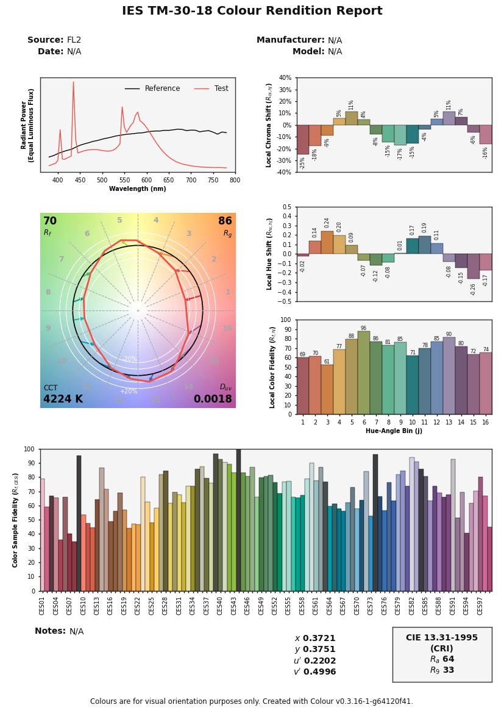

Colour 0.3.16 is available!
Colour 0.3.16 has finally been released!
This release integrates all the GSoC work from Pawel (@enneract), most of the code from Nishant (@njwardhan) and, the optimizations from Omar (@OmarWagih1). We would like to thank them again for their great contributions!
With this release, we stop testing for Python 3.5 and, Scipy>=1.1.0 becomes the minimum version. This is also the last feature release to support Python 2.7. We will also trim the deprecation code in the next version thus, please make sure to update your code accordingly.
Besides the various minor changes and fixes, the highlights of this release are:
Support for Jakob and Hanika (2019), Mallett and Yuksel (2019) and, Otsu, Yamamoto and Hachisuka (2018) spectral upsampling methods thanks to Pawel's contributions as part of GSoC 2020.
Support for the computation of the CIE 2017 Colour Fidelity Index and ANSI/IES TM-30-18 Colour Fidelity Index colour quality metrics thanks to Pawel's contributions as part of GSoC 2020.
Support for generation of the ANSI/IES TM-30-18 Colour Rendition Report thanks to Pawel's contributions as part of GSoC 2020.
Improvements of the LUT IO support thanks to Nishant's contributions as part of GSoC 2020.
Performance improvements thanks to Omar's contributions as part of GSoC 2020.
Support for ACES Input Device Transform (IDT) generation: The implementation follows to some extent RAW to ACES v1 and P-2013-001 procedure.
-
New ISO spectral datasets:
ISO 6728 Standard Lens
ISO 7589 Diffuser
ISO 7589 Photographic Daylight
ISO 7589 Sensitometric Daylight
ISO 7589 Studio Tungsten
ISO 7589 Sensitometric Studio Tungsten
ISO 7589 Photoflood
ISO 7589 Sensitometric Photoflood
ISO 7589 Sensitometric Printer
Support for IGPGTG colourspace by Hellwig and Fairchild (2020).
The colour.SpectralDistribution.interpolate and colour.MultiSpectralDistributions.interpolate methods now honour class instantiation time interpolation parameters instead of blindly applying CIE 167:2005 recommendation, this introduces minor numerical changes.
Many definitions, methods and module attributes have been renamed to improve consistency and we are reaching a satisfactory point in that regard, hopefully, the names will be much more stable from now on.
Please visit the releases page for complete details.
Our other dependent Python packages have also been updated accordingly:
-
-
The following new datasets have been added:
4050598 : Spectral Upsampling Coefficient Tables - Jakob and Hanika (2019)
4051012 : Measured Commercial LED Spectra - Brendel (2020)
-
Comments
Comments powered by Disqus